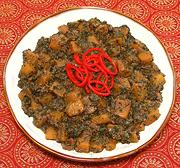

|
Winter Squash, Red Chard CurryIndia - Bengal - Kumro Diye Lal Shager Ghanto | ||||
| Serves: Effort: Sched: DoAhead: |
4 main *** 1-1/2 hrs Yes |
This is a fairly dry curry, with the sweetness from squash and onion countered by chard and chili, with yogurt providing a light sour note. The generous portion of Black Cumin gives it an unusual aroma. | |||
|
1-1/3 1-1/2 6 1 3/4 2/3 2/3 1 3 1/2 1/3 ar ------ 1/2 1/2 ------ |
# c oz in c t t T c --- T T --- |
Winter Squash (1) Chard, red (2) Onion, red Chili, green (3) Ginger root Yogurt Salt Sugar Bay Leaves Black Cumin (4) Mustard Oil (5) Water (6) -- Tadka Ghee (7) Garam Masala (8) ---------- |
PREP - (35 min)
|
imv_sqchar1 bfsc142 140806 - www.clovegarden.com
©Andrew Grygus - agryg@aaxnet.com - Linking to and
non-commercial use of this page is permitted.